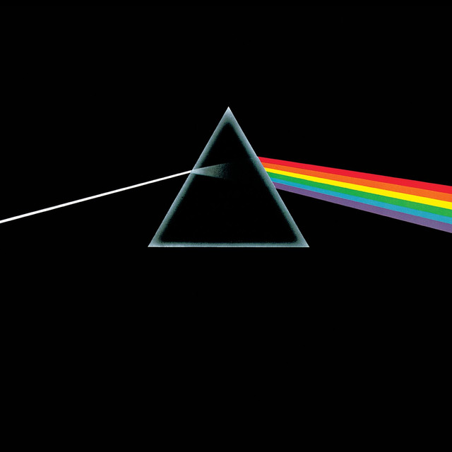

<div class="footer">
  <div class="nav-bar-bottom">
    <div class="info">
      <a></a>
      <div class="box-info">
        <a class="song"><span>{{song}}</span></a>
        <a class="artis"><span>{{end}}</span></a>
      </div>
      <a class="select heart"><i class="far fa-heart"></i></a>
      <a class="select folder"><i class="far fa-folder"></i></a>
    </div>
    <div class="center">
      <div class="top">
        <a class="button disabled"><i class="fas fa-random"></i></a>
        <a class="button select"><i class="fas fa-step-backward"></i></a>
        <a class="play" (click)="playOrPause()"><i [ngClass]="toggle()"></i></a>
        <a class="button select"><i class="fas fa-step-forward"></i></a>
        <a class="button disabled"><i class="fas fa-redo-alt"></i></a>
      </div>
      <div class="bottom">
        <span>{{start}}</span>
        <div class="bar"></div>
        <span>{{end}}</span>
      </div>
    </div>
    <div class="bonus">
      <a class="select"><i class="fa-solid fa-microphone"></i></a>
      <a class="select"><i class="fas fa-list-ul"></i></a>
      <a class="select"><i class="fas fa-desktop"></i></a>
      <a><i class="fas fa-volume-up"></i></a>
      <div class="bar"></div>
    </div>
  </div>
</div>
